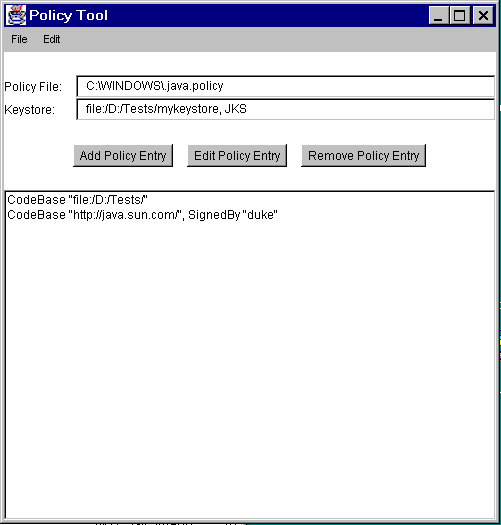

| 목차 | 전의 항목 | 다음의 항목 | Java 시큐리티 아키텍쳐(architecture) |
현재 상태로서는, 모든 Java 2 SDK 시스템 코드는, SecurityManager 메소드를 호출해, 실시중의 정책 및 액세스 제어를 검사합니다. 일반적으로, 애플릿의 실행중에는, 시큐리티 매니저 (SecurityManager 의 구현)가 인스톨 되고 있습니다. appletviewer 및 Netscape 나 Microsoft Internet Explorer 등이 일반적인 브라우저는, 시큐리티 매니저를 인스톨 합니다.시큐리티 매니저는, 어플리케이션의 실행중에 자동적으로 인스톨 되는 것은 아닙니다. 로컬 파일 시스템의 어플리케이션에 대해서, 다운로드한 애플릿에 대하는 것과 같은 시큐리티 정책를 적용하려면 , 어플리케이션을 실행하는 사용자가, 다음과 같이 새로운 「-Djava.security.manager」커멘드행 인수 ( 「java.security.manager」프로퍼티의 값을 설정한다)를 사용해 Java 가상 머신을 호출할 필요가 있습니다.
java -Djava.security.manager SomeApp
혹은, 어플리케이션 자체가, java.lang.System 클래스의setSecurityManager메소드를 호출해, 시큐리티 매니저를 인스톨 할 필요가 있습니다.특정의 시큐리티 매니저를 커멘드행으로 지정할 수 있습니다. 그 경우, 다음에 나타내도록(듯이) 「-Djava.security.manager」의 후에, 등호, 및 시큐리티 매니저로서 사용하는 클래스의 이름을 지정합니다.
java -Djava.security.manager=COM.abc.MySecMgr SomeApp
시큐리티 매니저가 지정되지 않는 경우, 디폴트로 짜넣어지는 시큐리티 매니저가 사용됩니다 (어플리케이션이 다른 시큐리티 매니저를 인스톨 하는 경우를 제외하다). 다음의 코드는 모두 등가이며, 디폴트의 시큐리티 매니저를 사용합니다.
java -Djava.security.manager SomeApp
java -Djava.security.manager="" SomeApp
java -Djava.security.manager=default SomeApp
Java 2 SDK 에는 「java.class.path」라고 하는 프로퍼티이 포함됩니다. 로컬 파일 시스템에 포함되지만, 시스템 클래스로서는 다루어지지 않는 클래스 (SDK 에 편입의 클래스등)는, 이 패스에 놓여집니다. 이 패스의 클래스는, 안전한 클래스 로더에 의해 로드 되어 실시중의 시큐리티 정책에 따릅니다.또, 「-Djava.security.policy」커멘드행 인수에 의해, 사용하는 정책 파일을 지정할 수 있습니다. 이 커멘드행 인수의 상세한 것에 대하여는, 「디폴트 시스템 및 사용자 정책 파일」로 설명합니다. 기본적으로, 커멘드행에 「-Djava.security.policy」를 포함하지 않는 경우, 시큐리티 프로퍼티 파일로 지정된 정책 파일이 사용됩니다.
「-Djava.security.policy」커멘드행 인수를 사용해, 어플리케이션의 호출시에, 정책 파일을 추가하거나 다른 정책 파일을 지정하거나 할 수가 있습니다. 예를 들어, 다음과 같이 해 지정합니다. 여기서,pURL 는, 정책 파일의 위치를 지정하는 URL 입니다. 여기로부터 지정된 정책 파일이 로드 되어 시큐리티 프로퍼티 파일로 지정된 모든 정책 파일에 추가됩니다.
java -Djava.security.manager -Djava.security.policy=pURL SomeApp
대신에 「==」을 사용해 다음의 커멘드를 기술하면(자), 지정된 정책 파일만이 사용되어 그 외의 정책 파일은 모두 무시됩니다.
java -Djava.security.manager -Djava.security.policy==pURL SomeApp
액세스 제어의 새로운 기구는, 완전하게 하위 호환성이 있습니다. 예를 들어, SecurityManager 내의check메소드의 대부분의 구현은, SecurityManager 의checkPermission메소드를 호출하는 것 (디폴트의 구현에서는 AccessController 의checkPermission메소드를 호출하는 것) 같게 변경되었습니다만, 그러한 메소드는 모두 지원되고 있습니다. 특정의 내부 시큐리티 체크는, 파라미터화 되는 경우를 제외해 SecurityManager 클래스내에 서로 계속합니다.현시점에서는, SecurityManager 를 호출해 클래스 로더의 존재를 체크하는 대신에, AccessController 를 호출하도록(듯이) 시스템 코드의 모든 것을 개정하는 작업은 완료하고 있습니다. 이것은, SecurityManager 를 서브 클래스화해,
check메소드를 커스터마이즈 하는 Sun 이외의 어플리케이션이 존재할 가능성이 있기 때문입니다. 그 때문에, 디폴트에서는 단지AccessController.checkPermission를 호출하는SecurityManager.checkPermission라고 하는 새로운 메소드를 추가했습니다.SecurityManager 가 액세스 제어의 중심적인 개념을 나타내고 있는 것에 주목하면(자), SecurityManager 와 AccessController 와의 관계를 이해할 수 있습니다. AccessController 는,
doPrivileged메소드 등 특수한 기능을 사용해, 특정의 액세스 제어 알고리즘을 구현하고 있습니다. SecurityManager 를 최신에 유지하는 것으로, 하위 호환성 (이전의 버젼의 JDK 에 근거하는 독자적인 시큐리티 매니저 클래스를 기술한 어플리케이션과의 호환성 등), 및 유연성 (시큐리티 모델을 커스터마이즈 해 필수 액세스 제어 또는 복수 레벨의 시큐리티를 구현하는 등)이 유지되고 있습니다. AccessController 에 의해, 가장 한정적인 알고리즘을 제공하는 것에 의해, 대부분의 시나리오에 대응하는 시큐리티 코드를 기술해야 하는 무거운 짐으로부터 프로그래머를 해제합니다.어플리케이션 코드로 AccessController 를 사용하는 것을 강하게 추천합니다. 한편, 시큐리티 매니저의 (서브 클래스화에 의한다) 커스터마이즈는, 세심의 주위를 기울여 실시할 필요가 있기 (위해)때문에, 마지막 수단에 해야 합니다. 게다가 표준 시큐리티 체크를 호출하기 전에 항상 일시를 체크하는 것 같은 커스터마이즈 된 시큐리티 매니저에게는, 적절한 경우에는 언제라도 AccessController 가 제공하는 알고리즘을 사용해야 합니다.
이 섹션에서는, 새로운 시큐리티 기능의 전개를 지원하는 3 개의 툴의 사용법에 대해 간단하게 설명합니다. 이러한 툴은, 향후 1 개(살)에 패키지화될 예정입니다.툴의 상세한 것에 대하여는, SDK 디렉토리의 다음의 서브 디렉토리를 참조해 주세요.
/docs/technotes/tools/solaris
및
/docs/technotes/tools/windows
Windows 시스템에서는, 디렉토리의 단락 문자는, 「\」이 됩니다.예를 들어, Java 2 SDK 가 Solaris 시스템의 「/j2sdk1. 2」디렉토리에 인스톨 되고 있는 경우에는, Solaris 및 Windows 사용자용의 keytool 의 문서는, 각각 다음의 장소에 포함되고 있습니다.
/j2sdk1. 2/docs/tooldocs/solaris/keytool.html /j2sdk1. 2/docs/tooldocs/windows/keytool.html
Java 2 SDK 가 Windows 시스템의 「C:\j2sdk1. 2」디렉토리에 인스톨 되고 있는 경우, Solaris 및 Windows 사용자용의 keytool 의 문서는, 각각 다음의 장소에 포함되고 있습니다.
C:\j2sdk1. 2\docs\tooldocs\solaris\keytool.html C:\j2sdk1. 2\docs\tooldocs\windows\keytool.html
keytool 는, 열쇠와 증명서를 관리하기 위한 유틸리티입니다. keytool 를 사용하면(자), 자신의 공개키와 비공개키의 페어, 및 관련하는 증명서를 관리해, 디지털 서명을 사용한 자기 인증 (다른 사용자 또는 서비스에 대해서 자기 자신을 인증하는 것)이나, 데이터의 무결성과 증명서에 관한 서비스를 이용할 수가 있습니다. 인증 정보에는, X. 509 증명서의 순서 (체인)와 관련한 비공개키 (통칭 「별명」에 의해 참조된다)의 양쪽 모두가 포함됩니다. 이 툴은, 증명서 (사용자에 의해 「신뢰되고 있다」)도 관리합니다. 이 증명서는, 인증 정보와 같은 데이타베이스에 포함되고 있어 「별명」에 의해 참조됩니다.keytool 는, 열쇠와 증명서를 「키스토어」에 포함합니다. 디폴트의 키스토어 구현은, 키스토어를 파일로서 구현합니다. 키스토어는, 비공개키를 패스워드로 보호합니다.
X. 509 증명서 체인은, 증명서 발행국 (Certification Authority, CA)이라고 하는 조직에 의해 제공됩니다. 아이덴티티 (CA 를 포함한다)는, 그 비공개키를 사용해, 객체 (SSL 를 사용해 시큐리티 설정한 채널 등)와의 관계, 서명한 코드의 어카이브(archive)와의 관계, 및 발행한 X. 509 증명서 (CA 용)와의 관계를 인증합니다. bootstrap 툴로서 -genkey 커멘드를 사용해 생성한 증명서는, 증명서 발행국이 증명서 체인을 돌려줄 때까지 사용될 가능성이 있습니다.
이 데이타베이스내의 비공개키는, 부적절하게 공개되지 않게 항상 암호화되어 보존됩니다. 데이타베이스에 액세스 하는지, 데이타베이스를 변경하는 경우에는, 패스워드가 요구됩니다. 이러한 비공개키는, 복수의 단어로 구성되는 「패스워드」를 사용해 암호화됩니다. 패스워드를 잊었을 경우, 인증열쇠를 복원할 수 없습니다.
실제, 키스토어내의 각 비공개키는, 개개의 패스워드에 의해 보호할 수가 있습니다. 이 패스워드는, 키스토어의 전체적인 무결성을 보호하는 패스워드와 같은 경우도, 다른 경우도 있습니다.
현재, 이 툴은, 커멘드행으로 쉘 prompt에, 단지 「keytool」라고 입력해 사용하게 되어 있습니다. keytool 는, 적절한 Java 클래스를 실행하는 스크립트로 SDK 에 짜넣어지고 있습니다.
각 커멘드의 커멘드행 옵션은, 임의의 순서로 지정할 수 있습니다. 부정확한 옵션을 입력하거나 「keytool -help」라고 입력하면(자), 다음과 같은 툴의 사용법의 개략이 출력 디바이스 (쉘 윈도우등)에 출력됩니다.
% keytool -help
KeyTool usage:
-certreq [-v] [-alias <alias>] [-sigalg <sigalg>]
[-file <certreq_file>] [-keypass <keypass>]
[-keystore <keystore>] [-storepass <storepass>]
[-storetype <i>storetype</i>]
-delete [-v] -alias <alias>
[-keystore <keystore>] [-storepass <storepass>]
[-storetype <i>storetype</i>]
-export [-v] [rfc] [-alias <alias>] [-file <cert_file>]
[-keystore <keystore>] [-storepass <storepass>]
[-storetype <i>storetype</i>]
-genkey [-v] [-alias <alias>] [-keyalg <keyalg>]
[-keysize <keysize>] [-sigalg <sigalg>]
[-dname <distinguished_name>] [-validity <valDays>]
[-keypass <keypass>] [-keystore <keystore>]
[-storepass <storepass>]
[-storetype <i>storetype</i>]
-help
-identitydb [-v] [-file <idb_file>] [-keystore <keystore>]
[-storepass <storepass>]
[-storetype <i>storetype</i>]
-import [-v] [-noprompt] [-alias <alias>]
[-file <cert_file>] [-keypass <keypass>]
[-keystore <keystore>] [-storepass <storepass>]
[-storetype <i>storetype</i>]
-keyclone [-v] [-alias <alias>] -dest <dest_alias>
[-keypass <keypass>] [-new <new_keypass>]
[-keystore <keystore>] [-storepass <storepass>]
[-storetype <i>storetype</i>]
-keypasswd [-v] [-alias <alias>]
[-keypass <old_keypass>] [-new <new_keypass>]
[-keystore <keystore>] [-storepass <storepass>]
[-storetype <i>storetype</i>]
-list [-v | -rfc] [-alias <alias>]
[-keystore <keystore>] [-storepass <storepass>]
[-storetype <i>storetype</i>]
-printcert [-v] [-file <cert_file>]
-selfcert [-v] [-alias <alias>] [-sigalg <sigalg>]
[-dname <distinguished_name>] [-validity <valDays>]
[-keypass <keypass>] [-keystore <keystore>]
[-storepass <storepass>]
[-storetype <i>storetype</i>]
-storepasswd [-v] [-new <new_storepass>]
[-keystore <keystore>] [-storepass <storepass>]
[-storetype <i>storetype</i>]
PolicyTool 는, 그래피컬 사용자 인터페이스 (다음의 그림을 참조)로, 사용자 (시스템 관리 책임자등)에 의한 시큐리티 정책의 지정, 생성, 편집, export, 또는 임포트를 지원하는 툴입니다. 이 툴은, 커멘드행으로policytool라고 입력하면(자) 불려 갑니다. 이 툴도 SDK 에 짜넣어진 스크립트로, 적절한 (비공개의) 구현 클래스를 호출합니다.사용법 및 최신의 screen shot를 포함한 예에 대해서는,PolicyTool 의 문서를 참조해 주세요. 문서는, policytool.html 파일에 포함되고 있어 이 파일은 SDK 가 인스톨 된 디렉토리내의 다음의 디렉토리에 있습니다.
/docs/technotes/tools/solaris/
또는
/docs/technotes/tools/windows/
파일 단락 문자는, Windows 시스템에서는, backslash가 됩니다.
jarsigner 툴을 사용하면(자), Java Archives (JAR 파일)에 디지털 서명 하거나 그 서명을 검증하거나 할 수가 있습니다. PolicyTool 와 같이, 이 툴은 keytool 에 의해 관리되는 키스토어에 의존하고 있습니다. 사용 방법의 개략을 다음에 나타냅니다.
% jarsigner
사용 방법: jarsigner [options] jar-file alias
jarsigner -verify [options] jar-file
[-keystore <url>] keystore file location
[-storepass <password>] password for keystore integrity
[-keypass <password>] password for private key (if different)
[-sigfile <file>] name of . SF/.DSA file
[-signedjar <file>] name of signed JAR file
[-verify] verify a signed JAR file
[-verbose] verbose output when signing/verifying
[-certs] display certificates when verbose and verifying
[-internalsf] include . SF file inside signature block
[-sectionsonly] don't compute hash of entire manifest
이 툴도 SDK 에 짜넣어진 스크립트입니다. 이 툴과 기존의 jar 툴의 스크립트는, 장래 통합되어, 서명 붙어 또는 미서명의 JAR 를 작성하는 단일의 커멘드행 프리미티브(primitive)으로 될 가능성이 있습니다.